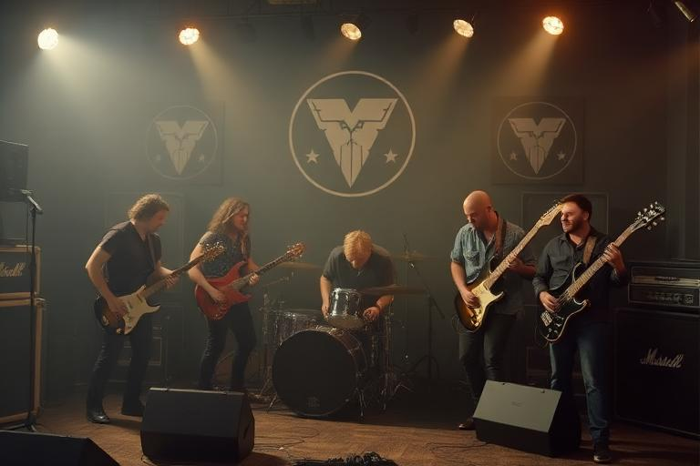

Recording guide
Recording Studios & Sessions
Recording turns a song into a lasting asset that can be released, streamed, sold and promoted. It is one of the places where songwriting, performer skills, preparation, studio quality and specialist staff all meet—so expensive sessions are best booked when the material and people are ready.

In brief
Choose a suitable studio, make sure the song is developed, confirm the required performers can attend, rehearse enough that the session is not the first serious run-through, choose production help where useful, and check which account will pay before confirming the booking.
Before you book
- The song is written and belongs to, or is usable by, the recording artist.
- The relevant band members or performers can attend the session.
- The required musical roles are covered.
- The song has enough familiarity and rehearsal to justify studio time.
- The studio is in a city the artist can actually reach.
- The correct payment source has enough money.
- The booking does not collide with travel, gigs or other locked activities.
Choosing a studio
Studios differ in price, quality and supporting infrastructure. The most expensive studio is not automatically the best business decision for every recording.
Studio quality
Better rooms, equipment and capture environments can improve what the session is capable of delivering.
Engineering
Engineering quality affects how effectively performances are captured and shaped.
Genre fit
Specialist experience can matter when a producer, engineer or studio suits the style being recorded.
Cost
A technically better studio can still be the wrong choice if the bill prevents rehearsal, promotion, travel or future releases.
Performers and role coverage
Recording evaluates the people actually contributing to the session. Relevant instrumental and vocal ability, preparedness and condition all matter. A band should not assume that membership alone guarantees a role is covered.

Where the system offers session musicians or outside specialists, they are most useful for filling a genuine gap or adding expertise—not as a universal replacement for developing the band itself.
Producers and engineers
Production staff influence the technical and creative side of the recording. Their value depends on the rest of the session: a strong producer can improve a good setup, but cannot completely erase poor source material or unready performers.
| Contributor | Think about |
|---|---|
| Producer | Creative direction, production ability, style/genre fit and the needs of the song. |
| Engineer | Capture quality, technical execution and how effectively the studio is used. |
| Performers | Relevant role skills, familiarity, preparation and condition. |
| Studio | Room, equipment and overall technical environment. |
Who pays?
Band recording work normally makes most sense as a band expense when the booking flow supports it. Personal funds can be appropriate where the game allows the player to choose them. Always review the selected source before confirming so one character does not accidentally bankroll a shared project.

After the session
- Review the result. Look at the feedback and the completed recording rather than assuming price alone determined quality.
- Compare it with the song. A great recording of weaker material and a rough recording of a strong song create different release decisions.
- Plan the release. Decide whether the track belongs on a single, EP, album or later campaign.
- Prepare promotion. Do not wait until release day to think about PR, social activity, touring or live support.